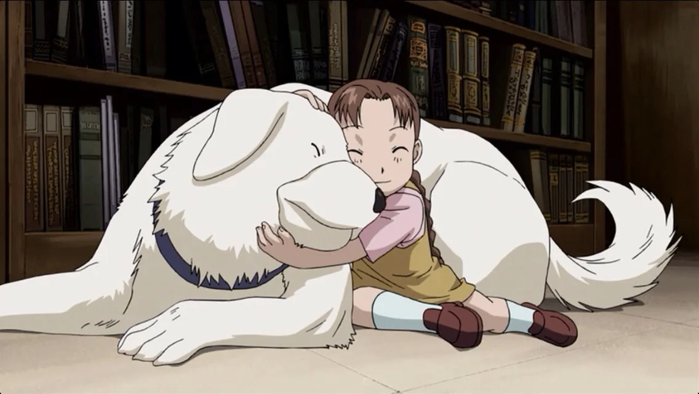
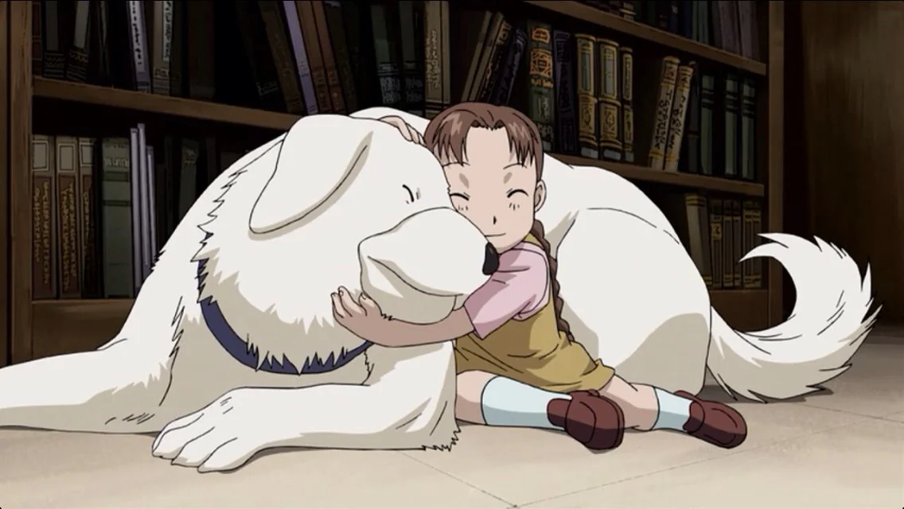

Fullmetal Alchemist : Brotherhood Afterthoughts
(Spoilers Alert)
No show or movie has scarred me like episode 4, "An Alchemist's Anguish." Shou Tucker, a state alchemist, in order to keep his title, combined his own daughter Nina with their dog Alexander to create a chimera.
The show explores the dangers of scientism — the idea that complete faith in any system of knowledge (including science) can lead to devastating consequences.
Or at least, that’s what the conventional analysis suggests. But just as food for thought: would Ed and Al have even continued their journey without placing complete trust in alchemy? The story dives deep into the trauma the Elric brothers endure as their faith in alchemy is slowly shattered, culminating in a powerful ending — where Al can only restore his brother’s body by ultimately rejecting alchemy altogether.
The show beautifully captures how someone, driven by desperation to trust a system of knowledge like alchemy in order to save a loved one, must eventually confront the horrors of blind faith.
The way the Elric brothers handle their past mistakes — refusing to let their trust in alchemy override their natural morality — is truly inspirational. Anyway, I’m writing my first blog because I urge anyone who is reading this to watch the show.
 
